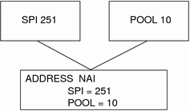
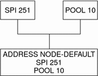

Previous
Previous
Mobile Node Identified by Its NAI
The Address section for a mobile node that is identified by its NAI contains the Type, SPI, and Pool labels. The NAI parameter enables you to identify mobile nodes through their NAI. The Address section, using the NAI parameter, has the following syntax:
[Address NAI]
Type = Node
SPI = SPI-identifier
Pool = pool-identifier
|
To use pools, you identify mobile nodes through their NAI. The Address section permits you to configure an NAI, as opposed to a home address. An NAI uses the format user@domain. You use the Pool label to specify which address pool to use in order to allocate the home address to the mobile node.
The following table describes the labels and values that you can use in the Address section for a mobile node that is identified by its NAI.
Table 29-7 Address Section Labels and Values (Mobile Node Identified by Its NAI)
Label | Value | Description |
|---|---|---|
Type | node | |
SPI | n | |
Pool | n | Allocates the pool from which an address is assigned to a mobile node |
You must have corresponding SPI and Pool sections for the SPI and Pool labels that are defined in an Address section with a mobile node that is identified by its NAI, as shown in the following figure.
Figure 29-1 Corresponding SPI and Pool Sections for Address Section With Mobile Node Identified by Its NAI
Default Mobile Node
The Address section for a default mobile node contains the Type, SPI, and Pool labels. The Node-Default parameter enables you to permit all mobile nodes to get service if they have the correct SPI (defined in this section). The Address section, using the Node-Default parameter, has the following syntax:
[Address Node-Default]
Type = Node
SPI = SPI-identifier
Pool = pool-identifier
|
The Node-Default parameter enables you to reduce the size of the configuration file. Otherwise, each mobile node requires its own section. However, the Node-Default parameter does pose a security risk. If a mobile node is no longer trusted for any reason, you need to update the security information on all trusted mobile nodes. This task can be very tedious. However, you can use the Node-Default parameter in networks that consider security risks unimportant.
The following table describes the labels and values that you can use in the Address section for a default mobile node.
Table 29-8 Address Section Labels and Values (Default Mobile Node)
Label | Value | Description |
|---|---|---|
Type | node | |
SPI | n | |
Pool | n | Allocates the pool from which an address is assigned to a mobile node |
You must have corresponding SPI and Pool sections for the SPI and Pool labels that are defined in the Address section with a default mobile node, as shown in the following figure.
Figure 29-2 Corresponding SPI and Pool Sections for Address Section With a Default Mobile Node
Configuring the Mobility IP Agent
You can use the mipagentconfig command to configure the mobility agent. This command enables you to create or modify any parameter in the /etc/inet/mipagent.conf configuration file. Specifically, you can change any setting. Also, you can add or delete mobility clients, pools, and SPIs. The mipagentconfig command has the following syntax:
# mipagentconfig <command> <parameter> <value> |
The following table describes the commands that you can use with mipagentconfig to create or modify parameters in the /etc/inet/mipagent.conf configuration file.
Table 29-9 mipagentconfig Subcommands
Command | Description |
|---|---|
add | Used to add advertisement parameters, security parameters, SPIs, and addresses to the configuration file |
change | Used to change advertisement parameters, security parameters, SPIs, and addresses in the configuration file |
delete | Used to delete advertisement parameters, security parameters, SPIs, and addresses from the configuration file |
get | Used to display current values in the configuration file |
See the mipagentconfig(1M) man page for a description of command parameters and acceptable values. Modifying the Mobile IP Configuration File provides procedures that use the mipagentconfig command.
Mobile IP Mobility Agent Status
You can use the mipagentstat command to display a foreign agent's visitor list and a home agent's binding table. You can also display the security associations with an agent's mobility agent peers. To display the foreign agent visitor list, you use the mipagentstat command's -f option. To display the home agent binding table, you use the mipagentstat command's -h option. To display the security associations with an agent's mobility agent peers, you use the mipagentstat command's -p option. The following examples show typical output when the mipagentstat command is used with these options.
Example 29-1 Foreign Agent Visitor List
Mobile Node Home Agent Time (s) Time (s) Flags
Granted Remaining
--------------- -------------- ------------ --------- -----
foobar.xyz.com ha1.xyz.com 600 125 .....T.
10.1.5.23 10.1.5.1 1000 10 .....T.
|
Example 29-2 Home Agent Binding Table
Mobile Node Home Agent Time (s) Time (s) Flags
Granted Remaining
--------------- -------------- ------------ --------- -----
foobar.xyz.com fa1.tuv.com 600 125 .....T.
10.1.5.23 123.2.5.12 1000 10 .....T.
|
Example 29-3 Mobility Agent Peer Security Association Table
Foreign ..... Security Association(s)..... Agent Requests Replies FTunnel RTunnel ---------------------- -------- -------- -------- -------- forn-agent.eng.sun.com AH AH ESP ESP Home ..... Security Association(s) ..... Agent Requests Replies FTunnel RTunnel ---------------------- -------- -------- -------- -------- home-agent.eng.sun.com AH AH ESP ESP ha1.xyz.com AH,ESP AH AH,ESP AH,ESP |
See the mipagentstat(1M) man page for more information about the command's options. Displaying Mobility Agent Status provides procedures that use the mipagentstat command.
Mobile IP State Information
On shutdown, the mipagent daemon stores internal state information in /var/inet/mipagent_state. This event occurs only when the mipagent provides services as a home agent. This state information includes the list of mobile nodes that are being supported as a home agent, their current care-of addresses, and remaining registration lifetimes. This state information also includes the security association configuration with mobility agent peers. If the mipagent daemon is terminated for maintenance and restarted, mipagent_state is used to recreate as much of the mobility agent's internal state as possible. The intention is to minimize service disruption for mobile nodes that might be visiting other networks. If mipagent_state exists, it is read immediately after mipagent.conf every time mipagent is started or restarted.
netstat Extensions for Mobile IP
Mobile IP extensions have been added to the netstat command to identify Mobile IP forwarding routes. Specifically, you can use the netstat command to display a new routing table that is called "Source-Specific." See the netstat(1M) man page for more information.
The following example shows the output of netstat when you use the -nr flags.
Example 29-4 Mobile IP Output From netstat Command
Routing Table: IPv4 Source-Specific
Destination In If Source Gateway Flags Use Out If
-------------- ------- ------------ --------- ----- ---- -------
10.6.32.11 ip.tun1 -- 10.6.32.97 UH 0 hme1
-- hme1 10.6.32.11 -- U 0 ip.tun1
|
The example shows the routes for a foreign agent that uses a reverse tunnel. The first line indicates that the destination IP address 10.6.32.11 and the incoming interface ip.tun1 select hme1 as the interface that forwards the packets. The next line indicates that any packet that originates from interface hme1 and source address 10.6.32.11 must be forwarded to ip.tun1.
snoop Extensions for Mobile IP
Mobile IP extensions have been added to the snoop command to identify Mobile IP traffic on the link. See the snoop(1M) man page for more information.
The following example shows the output of snoop that runs on the mobile node, mip-mn2.
Example 29-5 Mobile IP Output From snoop Command
mip-mn2# snoop
Using device /dev/hme (promiscuous mode)
mip-fa2 -> 224.0.0.1 ICMP Router advertisement (Lifetime 200s [1]:
{mip-fa2-80 2147483648}), (Mobility Agent Extension), (Prefix Lengths),
(Padding)
mip-mn2 -> mip-fa2 Mobile IP reg rqst
mip-fa2 -> mip-mn2 Mobile IP reg reply (OK code 0)
|
This example shows that the mobile node received one of the periodically sent mobility agent advertisements from the foreign agent, mip-fa2. Then, mip-mn2 sent a registration request to mip-fa2, and in response, received a registration reply. The registration reply indicates that the mobile node successfully registered with its home agent.
The snoop command also supports IPsec extensions. Consequently, you can show how registration and tunnel packets are being protected.